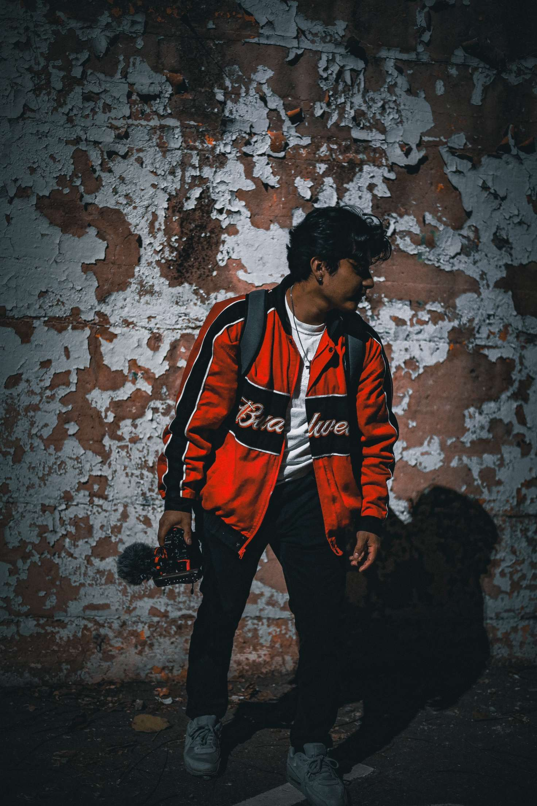
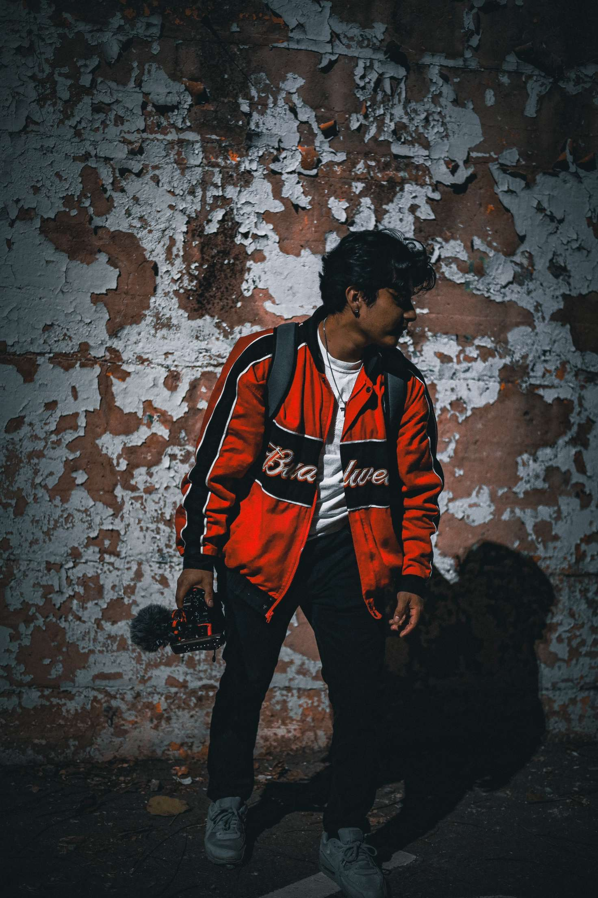

By Freddy Pantaleon
Innovative Design Solutions For Entrepreneurs Just Like You!
Welcome to @FDPDIGITALART a digital sanctuary dedicated to showcasing my collaborative achievements with my amazing clients. Embark on a visual odyssey that celebrates the artistry, diversity, and sheer beauty encapsulated through the creativity of both my team and yours! Our thoughtfully curated collection unveils a spectrum of graphic art forms, ranging from striking logos to intimate advertisements and thought-provoking compositions, each illustrating the depth and breadth my dedication to your design needs. My platform serves as a seamless conduit to connect with me, as well as a way to foster inspiration for our next collaboration to thrive. Whether you're an entrepreneur seeking to forge a brand identity for your vision or simply perusing my works, I invite you to join me on this journey. Don't hesitate to connect with me via our social channels listed in the footer. Be sure to explore the homepage, featuring our latest project: U-Volt. The upcoming sports brand embodying an electric self-improvement lifestyle. The "NoCompz" line is meticulously crafted to not only meet but surpass every athlete's exacting standards. Our gear promises to elevate your performance to unprecedented heights, rendering the competition obsolete. #NoCompz


 alt ="bridge">
alt ="bridge">


 
